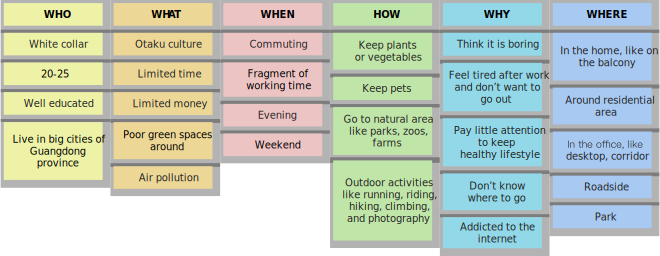

Easy Go
项目主题由英国环保组织Hubbub发起，作为设计调研和行为改变设计课程的作业。
设计采用自助提醒和规划，帮助城市年轻人更好地选择通勤方式，促进自然接触
同时，通过游戏化的骑行引导行为改变和习惯养成
This project was launched by Hubbub, an environmental organization, as coursework of Design Research
Method and Design for Behaviour Change.
Using reminders and auto route planning, the design helps young people in cities better choose
their commute methods and promote natural contact
Also, it promotes behavior change and habit development through gamification.
01 背景
Background
研究表明，接触自然有利于身心健康，与自然的联系可以提高人们的环保意识
然而，随着线上服务和宅文化的盛行，越来越多的城市年轻人成为宅家一族
在城市自然资源有限，人们意识不强的情况下，
如何通过设计，鼓励20-25岁的年轻白领走出家门，投入城市绿地？
02 设计调研
Design Research
问题假设
Assumptions
利用5W1H法，通过头脑风暴针对主题进行思考，探索调研问题和方向

猜想1：年轻人寻求群体认同感，因此更愿意参加流行活动，与自然相关的活动被视为无趣的，老龄化活动
猜想2：由于缺少时间和预算，他们不愿意出门，而城市的空气污染和有限绿地也让他们提不起兴趣
猜想3：他们没有接触自然的习惯，而且没有意识到接触自然对身心带来的好处
二手调研
Secondary
Research
对都市年轻白领日常生活习惯的调研
86.96%年轻白领每天加班
只有32.6%的白领有完整的周末
都市白领平均每天花87.4分钟通勤
50%的人坐地铁，31.9%的人坐公交
只有20.6%的人骑车，18.7%的人走路

大部分白领对现状不满
只有46%的白领对收入满意
30.6%的白领有买房计划
18.7%的白领计划买车
白领健康状况堪忧
久坐导致脊椎病、肥胖频发
73.32%的白领失眠
37.5%的白领经常焦虑
77.66%的白领空闲时间呆在家
其中50.7%的时间在上网追剧
外出时，56.7%的人选择和朋友相聚
54.8%的人会外出运动
72.6%的白领希望在空闲时间放松自己
也有32.7%的人希望进行社交
花费，交通，时间
是影响他们活动选择的主要因素
日志调研
Diary
Study
为了解都市年轻白领真实的日常及他们对自然的关注点，
邀请了三位朋友，对日常生活接触到的自然进行照片及心情感想记录

线上访谈
Online
interview
对参与日志调研的朋友进行半结构化访谈，用百度地图实景图作为辅助，挖掘他们的想法
探究日志调研遗留的问题，让他们补充关键场景如工作区绿植的照片
自传人种志
Auto
ethnography
对自己的观念，文化背景进行反思，回顾自己作为年轻白领时的日常生活及对自然的想法
03 调研分析
Data Analysis
分析方法
Analysis
Methods
用户画板
将所有调研的数据整理，集合成对应用户的特征、习惯，直观地了解用户偏好及共同点
亲和图
对数据进行层层分类、归纳，对其中的关联进行视觉化，从而定义问题和潜在的解决方案
调研洞察
Insights
①
虽然工作区有很多绿化，但因为上下班匆忙，工作时间繁忙，年轻白领很少注意到这些绿植
②
年轻白领觉得城市的绿地不吸引人，因为这些绿地通常用于城市装饰而不是作为活动场地，而且缺乏维护
③
通勤方式影响年轻白领与自然接触的频率，选择步行或骑车的白领有更多地机会与自然接触，也有更强的健康意识
04 用户画像
Persona
05 概念构思
Design Concept
设计机会
Opportunities
行为改变策略
用HMW (How Might We) 构思潜在的设计机会，并用坐标评估这些机会
设计愿景
Vision
Statement
针对经常忽视工作环境和通勤路上的绿化的年轻白领，
有机会设计一个APP，使用反馈，说服技术和游戏化，
鼓励他们沿着城市绿地步行或骑行，增加他们与自然的接触，改善通勤用户体验
创意发散
Ideation
用疯狂八分钟 (Crazy Eights) 进行创意发散，再用5个标准评估
体验地图
Experience
Map
06 原型设计
Prototype
草图
Sketchs
低保真
Lo-Fi
测试
Evaluation
远程草图测试：
邀请一位朋友在下班后模拟产品使用场景

身体风暴 (Bodystorming)低保真原型测试：
设计师在模拟时间、场景下使用产品，挖掘设计流程、功能点的不足
07 设计结果
Outcome
Easy Go是为城市年轻白领设计的通勤规划APP，它通过地铁人流、道路交通预测，
为白领提供建议，鼓励他们采用骑行、步行等方式，亲近自然，放松身心，
同时也能节省通勤时间，获得更好的通勤体验。
设计理念
Design
Principle
08 故事板
Context Scenario
08 反思
Reflection
由于设计背景基于大城市，而本人课程期间在家，因此无法做详细的实地调研，调研内容不够具体化
但是调研过程中，我最大化利用可得的资源，比如用百度实景地图查阅参与者日常活动的场景，理解他们的想法，尽可能挖掘设计机会点
设计中利用白领无法预知上下班高峰耗时的痛点，利用现有的人群流量监测和交通状况监测技术，帮助他们更好地选择通勤方式，鼓励他们接触自然、发现自然，鼓励更健康环保的生活方式
当然，设计也有不足之处，比如音乐合成流程不够直观和吸引人，需要进一步调研测试改进
作为课程作业，这个设计主要考虑问题解决和行为改变，因为独立项目而被设计为一个App
虽然这样的项目在商业设计中不太可能落地，但是设计概念依然是通用的，比如通勤功能整合到地图或共享单车的App中，
同时也可以考虑引入社交元素，让游戏化更有趣